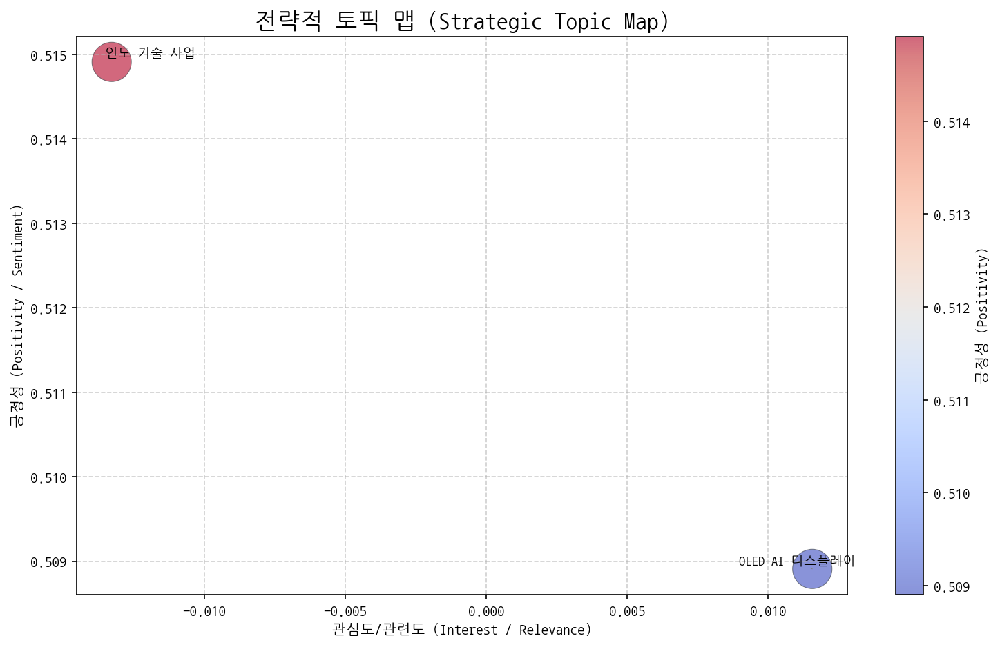
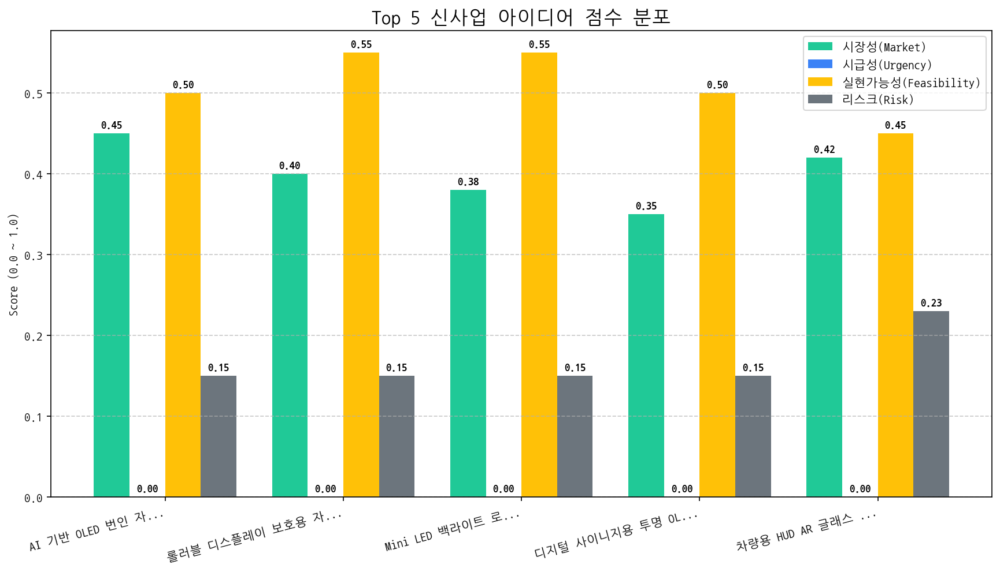

 | 토픽명 | 요약 | 핵심 키워드 | |:--------------|:---------------------------------------------------|:-------------| | 인도 기술 사업 | 인도 시장에서 AI, 반도체, Mini LED 기술 관련 사업 및 브랜드 매출 동향 분석. | 인도, 사업, 기술 | | OLED AI 디스플레이 | 중국 기술 발전에 따른 AI 기반 OLED 디스플레이 기술 동향 및 경쟁 상황 분석. | oled, de, ai |
 | 아이디어 | 가치 제안 | 총점 | |:----------------------------------|:--------------------------------------------------------------------------------------------------------------------|-----:| | AI 기반 OLED 번인 자동 보정 알고리즘 및 서비스 | AI 기반 실시간 번인 예측 및 자동 보정 알고리즘 제공. 디스플레이 수명 연장 및 사용자 경험 향상. 경쟁사 대비 높은 정확도와 빠른 응답 속도 제공. | 2.7 | | 롤러블 디스플레이 보호용 자기 치유 코팅 기술 | 롤러블 디스플레이 표면 스크래치를 스스로 복원하는 자기 치유 코팅 기술 제공. 디스플레이 내구성 향상 및 제품 수명 연장. 경쟁사 대비 빠른 복원 속도 및 높은 투명도 제공. | 2.6 | | Mini LED 백라이트 로컬 디밍 제어용 AI 반도체 | Mini LED 로컬 디밍 제어에 특화된 AI 반도체 제공. 저전력, 고효율 연산 성능으로 디스플레이 화질 향상 및 전력 소비 감소. 경쟁사 대비 낮은 가격으로 가격 경쟁력 확보. | 2.5 | | 디지털 사이니지용 투명 OLED 키오스크 | 투명 OLED 디스플레이를 활용한 키오스크 제공. 제품 전시와 정보 제공을 동시에 수행하여 공간 활용도 극대화. 주변 환경과 자연스럽게 조화되는 디자인 제공. | 2.3 | | 차량용 HUD AR 글래스 일체형 MicroLED 디스플레이 | MicroLED의 뛰어난 화질과 밝기를 활용, AR 글래스와 결합하여 넓은 시야각과 풍부한 정보 제공. 운전자의 시선 이동 최소화 및 안전 운전 지원. 경쟁사 대비 압도적인 몰입감과 미래지향적 디자인 제공. | 2.2 |
| Hypothesis | Target | KPI | Owner | Due |
|---|---|---|---|---|
| 북미 빅테크 기업(스마트폰, 노트북 제조사)은 OLED 번인 문제를 해결하기 위해 AI 기반 자동 보정 솔루션에 상당한 가치를 부여할 것이다. | 북미 빅테크 기업(스마트폰, 노트북 제조사)의 디스플레이 기술 담당 부서 책임자 5명 인터뷰 | 인터뷰 대상 5명 중 3명 이상이 현재 OLED 번인 문제로 인한 어려움을 인정하고, AI 기반 자동 보정 솔루션에 대한 관심 표명 | 사업개발팀 | 2025-11-01 |
| AI 기반 번인 예측 모델의 정확도가 95% 이상일 경우, 타사 대비 경쟁 우위를 확보할 수 있다. | 자체 개발한 AI 기반 번인 예측 모델의 정확도 검증 (실제 OLED 패널 데이터 기반) | 실제 OLED 패널 데이터 기반 테스트 결과, AI 기반 번인 예측 모델의 평균 정확도 95% 이상 달성 | 기술기획팀 | 2025-11-01 |
| 개발 중인 번인 보정 알고리즘이 기존 디스플레이 시스템과 호환성을 유지하며, 성능 저하 없이 작동할 것이다. | 기존 스마트폰 및 노트북 디스플레이 시스템에 번인 보정 알고리즘 통합 및 테스트 | 번인 보정 알고리즘 통합 후 디스플레이 시스템 성능 테스트 결과, 성능 저하 (프레임 드랍, 응답 속도 지연 등) 5% 미만 발생 | 기술기획팀 | 2025-11-01 |